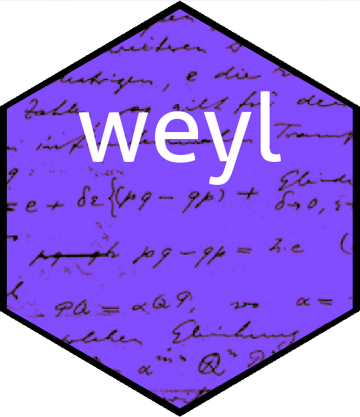

To cite the weyl package in publications please use Hankin 2022. The weyl package provides R-centric functionality for working with Weyl algebras of arbitrary dimension. A detailed vignette is provided in the package.
The Weyl algebra is a noncommutative algebra which is used in quantum mechanics and the theory of differential equations (Coutinho 1997). The weyl package offers a consistent and documented suite of R-centric software. It is based on the spray package for sparse arrays for computational efficiency.
The Weyl algebra is arguably the simplest noncommutative algebra and is useful in quantum mechanics. It is isomorphic to the quotient ring of the free algebra on two elements over the ideal generated by . The weyl package implements this and also the -th Weyl algebra.
One usually writes the Weyl algebra in terms of operators where means multiply by and means differentiate with respect to . We find that .
The Weyl algebra is also known as the symplectic Clifford algebra.
Installation
You can install the released version of the weyl package from CRAN with:
The weyl package in use
The basic creation function is weyl(), which takes a spray object and returns a member of the Weyl algebra.
S <- spray(rbind(c(1,0,0,1,1,0),c(0,1,1,3,2,0)) ,1:2)
S
#> val
#> 0 1 1 3 2 0 = 2
#> 1 0 0 1 1 0 = 1Above, object S is a standard spray object but to work with Weyl algebra we need to coerce it to a weyl object with weyl():
W <- weyl(S)
W
#> A member of the Weyl algebra:
#> x y z dx dy dz val
#> 0 1 1 3 2 0 = 2
#> 1 0 0 1 1 0 = 1Above, object W is a member of the third Weyl algebra: that is, the algebra generated by . In this case . In other words .
We might ask what is, and this is easy in the package:
Wsquared <- W*W
Wsquared
#> A member of the Weyl algebra:
#> x y z dx dy dz val
#> 0 2 2 6 4 0 = 4
#> 0 1 2 6 3 0 = 8
#> 0 1 1 3 3 0 = 6
#> 1 1 1 4 3 0 = 4
#> 2 0 0 2 2 0 = 1
#> 1 0 1 4 2 0 = 2
#> 1 0 0 1 2 0 = 1This is a more complicated operator. However, we might wish to display it in symbolic form:
options(polyform=TRUE)
Wsquared
#> A member of the Weyl algebra:
#> +4*y^2*z^2*dx^6*dy^4 +8*y*z^2*dx^6*dy^3 +6*y*z*dx^3*dy^3
#> +4*x*y*z*dx^4*dy^3 +x^2*dx^2*dy^2 +2*x*z*dx^4*dy^2 +x*dx*dy^2References
S. C. Coutinho 1997. The many avatars of a simple algebra. The American Mathematical Monthly, 104(7):593-604. DOI https://doi.org/10.1080/00029890.1997.11990687.
Hankin 2022. Quantum algebra in R: the weyl package. Arxiv, DOI https://doi.org/10.48550/ARXIV.2212.09230.